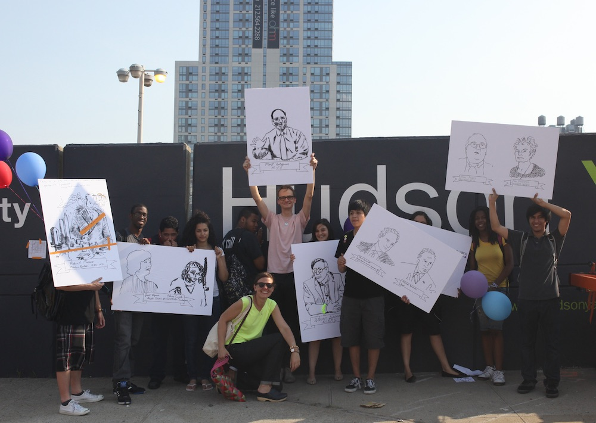
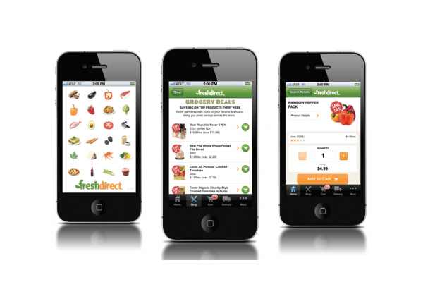
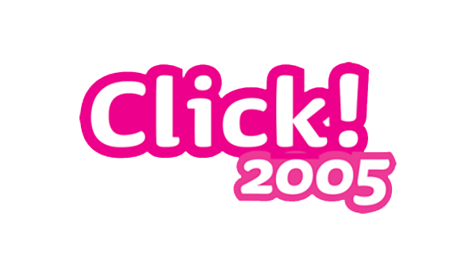

-

LinkPGH
Up to 50 Links in the City of Pittsburgh, a public process conducted via the Ford City of Tomorrow Challenge.
-

LinkNWK
Up to 45 Links in the City of Newark, including a business model for 15 "equity locations". Deployed in partnership with the Newark Community Economic Development Corporation and the City of Newark.
-

LA Metro Next Generation Customer Experience
Actionable roadmap to leverage digital advertising screens for double-duty to improve customer communications at LA Metro: growing and retaining ridership, and preparing LA for the Summer 2024 Olympic Games.
-

Sidewalk Labs Founding Vision Book
Govtech vision for a next generation city built "from the Internet up". Presented to the Alphabet board and submitted, in part, as Sidewalk Labs' vision for Sidewalk Toronto.
-

LinkNYC
Control Group and Titan (now Intersection)'s successful bid to replace New York City's 7500+ payphones with Link, the payphone of the future featuring gigabit Wi-Fi, community information, free phone calling and digital city services on a 13" tablet.
-

NYC DoITT Systems Integration 3 Contract Vehicle
Control Group's successful bid to join NYC's Department of Information Technology and Telecommunications (DoITT)'s on-call contract vehicle for systems integration projects up to $6MM.
-

Rabbit Transit's VTCLI One Call System
Pilot kiosks to connect veterans with transportation and economic opportunity in York, PA. Part of USDOT's Veterans Transportation and Community Living Initiative (VTCLI).
-

Second Avenue Subway (SaS) Advertising Master Plan
Advisory on digital infrastructure best practices to maximize advertising value and customer communications potential at five new subway stations built as part of the SaS project.
-

CitiBike Technology Stabalization and Transaction Advisory
Interim CTO and technical advisory to stabalize the platform during a high growth period; technical advisory during an acquisition of CitiBike by private equity investors.
-

Who Decides Where The Subway Goes?
An after-school 15-week urban investigation to help New York City high schoolers understand the politics and process of the 7 Line's extension to Hudson Yards.
-

MTA Bus Time
A real-time machine learning-powered platform to transform multiple noisy inputs into an accurate, unified real time arrival information system for customers of New York MTA's 6000+ buses. MTA's first and largest purchase of open source software.
-

Sound Transit Trip Planner
Deployment of OpenTripPlanner for Sound Transit in Seattle, including a customized web front-end built on the OpenGeo stack.
-

Cannes Touch Wall
A personalized, RFID-powered event directory and wayfinding system deployed at the largest adveritsing festival in the world, the Cannes Lions festival.
-

Fresh Direct iPhone App
Quality assurance, business rules validation and systems integration testing for Fresh Direct's iPhone app.
-

GigaPan
A robotic camera mount and online community to capture and share gigapixel+ panoramic images.
-

MapHub
A wiki-like, community-editable geographic information system (GIS) to encourage grassroots neighborhood data sharing.
-

Knowledge Center
Web-based decision support and incident response system for emergency responders in Western Pennsylvania (FEMA Region 13).
-

MapMover
A system to capture audio via an interactive voice response (IVR) from users in Pittsburgh, playing audio back in Karlsruhe, Germany via a robotic sculpture. Exhibited as part of "Making Things Public", curated by Steve Dietz and Bruno Latour.
-

Environmental Sensor Ride
Software and hardware to collect, map and visualize key environmental indicators including carbon monixide, carbon dioxide and others via bikerides through the city of Pittsburgh.
-

Click! 2005
A spy-themed role playing game that uses the City of Pittsburgh as a gameboard, teaching STEM skills to middle school-aged girls.